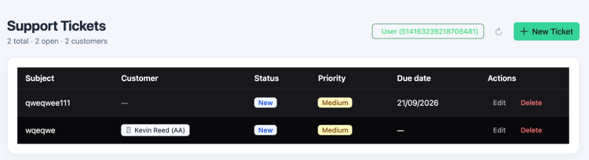
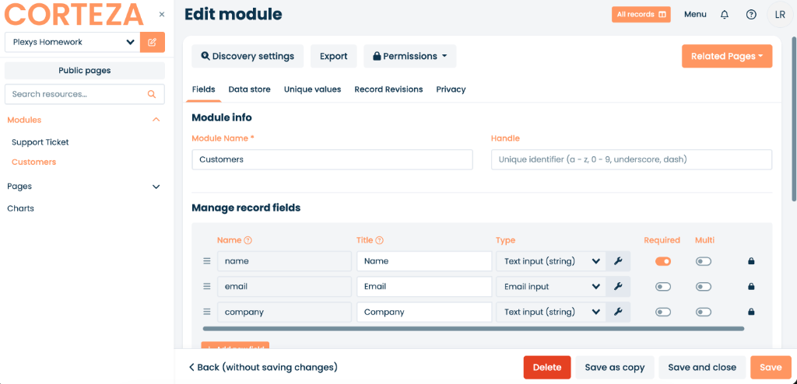
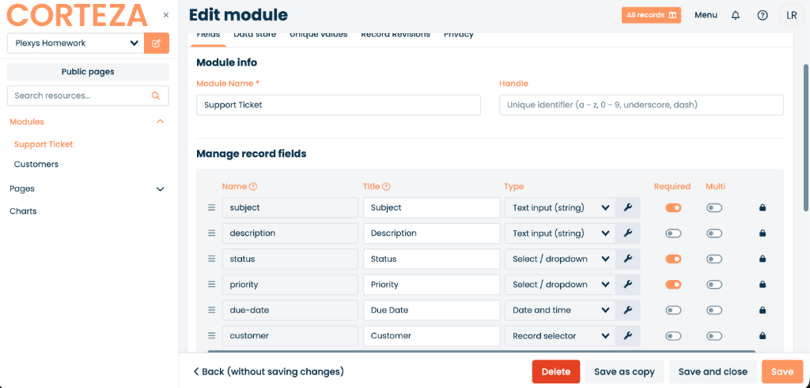
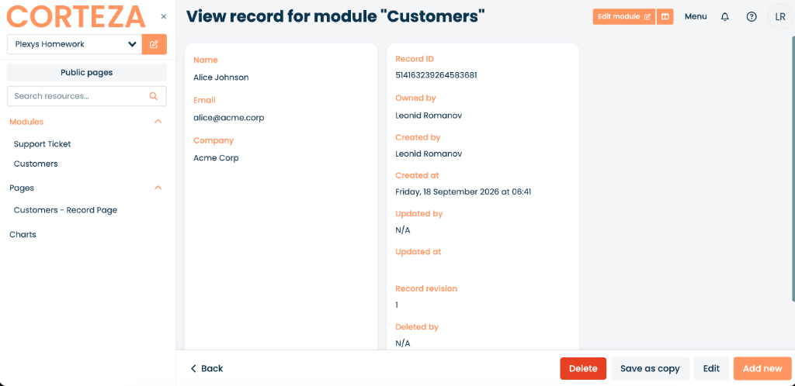
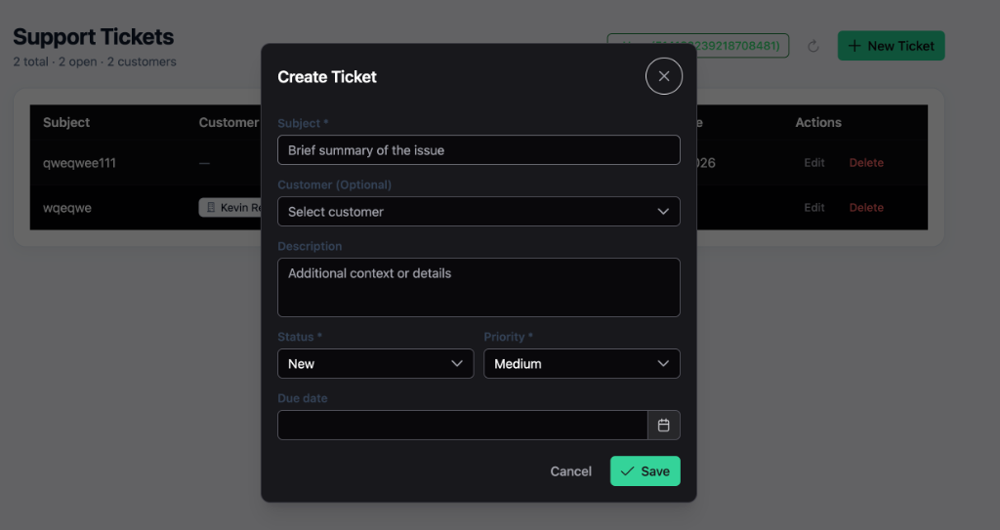
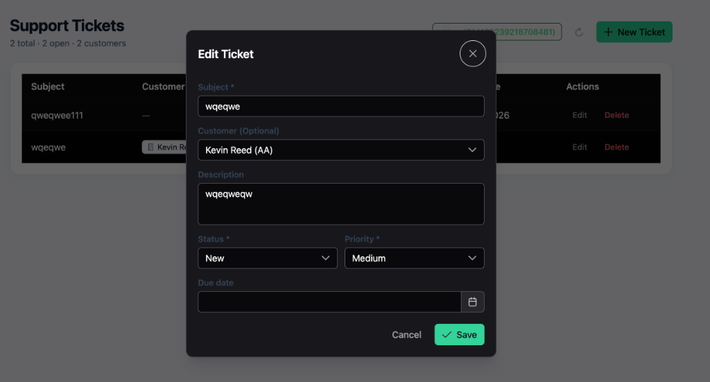
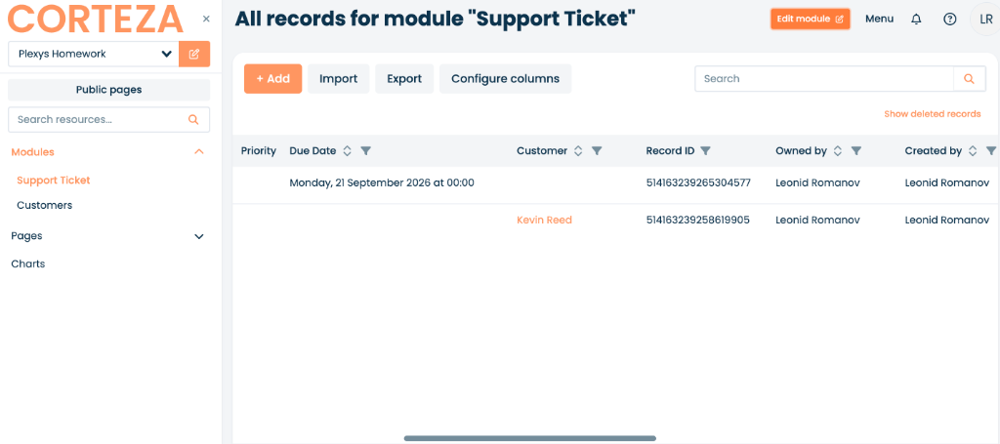

┌─────────────────────────────────────────────────────────────┐
│ Vue 3 SPA (PrimeVue) │
│ ┌──────────────────┐ ┌────────────────┐ ┌─────────────┐ │
│ │ TicketTable.vue │ │ TicketModal.vue│ │ App.vue │ │
│ └────────┬─────────┘ └───────┬────────┘ └──────┬──────┘ │
│ └────────────────────┼──────────────────┘ │
│ ↓ │
│ useTickets / useCustomers │
│ ↓ │
│ cortezaService (API) │
└────────────────────────────────┬────────────────────────────┘
│ HTTP Bearer JWT (OAuth2)
▼
┌─────────────────────────────────────────────────────────────┐
│ Corteza Low-Code Backend │
│ - Namespace: "Plexys Homework" │
│ - Modules: "Support Ticket", "Customers" (Record Relation) │
│ - RBAC & Audit Engine (Preserving Signed-in User Identity) │
└────────────────────────────────┬────────────────────────────┘
│
▼
┌─────────────────────────────────────────────────────────────┐
│ PostgreSQL 15 │
└─────────────────────────────────────────────────────────────┘
Vue 3's Composition API provides clean architectural boundaries between UI rendering and business logic. State management is isolated in composables (useTickets, useCustomers), while components (TicketTable.vue, TicketModal.vue) remain pure, declarative, and testable.
PrimeVue delivers accessible, responsive data components (DataTable, Dialog, Calendar, Select, ConfirmDialog) with native keyboard navigation, eliminating the need to write an unvetted UI library from scratch.
The Support Ticket module references the Customers module using a Record selector field. The frontend loads customer records dynamically and resolves foreign keys to names and company badges, supporting complete creation and update workflows.


| Step / Action | Observed vs. Assumed Behavior | UI Reaction & Recovery |
|---|---|---|
| API Authentication |
Assumed: Session cookies alone would authenticate REST calls via credentials: 'include'.Observed: Corteza REST API strictly requires an Authorization: Bearer <JWT> header.
|
Shows actionable error banner with a direct "Provide Auth Token" modal button to connect dynamically. |
| Create Ticket |
Observed: Client-side validation halts dispatch when mandatory subject is omitted.
|
Subject field highlights in red with "Subject is required"; modal remains open for correction. |
| Update Ticket |
Observed: API accepts targeted PATCH /record/{id} payloads.
|
Refreshes table on HTTP 200; keeps form open and displays descriptive banner on failure. |
| Delete Ticket | Observed: Irreversible operation must prevent accidental data deletion. | Prompts confirmation dialog; upon confirmation, calls DELETE and updates UI table reactively. |
| Customer Module Query | Observed: If Customer module is not yet created in Corteza, endpoint returns 404. | Gracefully activates fallback seed customers, keeping the UI functional without crashing. |

The Vue 3 interface delivers a seamless support ticket workflow: viewing active metrics, creating tickets with customer associations, editing existing issues, and deleting records safely.



# 1. Start Docker stack: docker compose up -d # 2. Start Frontend: cd frontend && npm install && npm run dev
| Implemented Scope (POC) | Production Roadmap (Next Steps) |
|---|---|
| ✅ Full CRUD for Support Tickets | → Server-side pagination using Corteza pageCursor and limit |
| ✅ Customer Cross-Module Relation | → Full Customer management CRUD UI and company filters |
| ✅ Dynamic OAuth2 Bearer Auth | → Automated PKCE authorization code redirect flow |
| ✅ Form Validation & Delete Safety | → Optimistic concurrency control via record version hashes |
| ✅ Responsive UI with PrimeVue | → Automated Playwright E2E and Vitest unit testing suite |
This POC demonstrates a clean, explainable, and extensible architecture connecting custom Vue 3 applications to Corteza's low-code data and permission engine. All design decisions, failure paths, and cross-module relations are verified and documented.